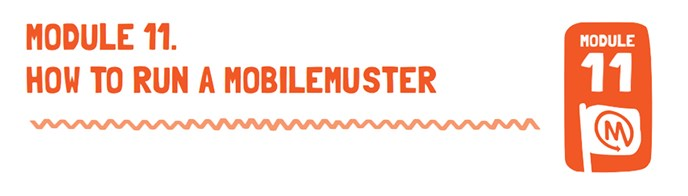

LESSON OBJECTIVE
In this module students will be provided with the skills to take action in running a MobileMuster. They will develop the understanding and skills necessary to act responsibly and create an event that will inform and persuade others to take action for sustainable futures.
AUSTRALIAN CURRICULUM CONTENT DESCRIPTION
| YEAR 4 ENGLISH |
YEAR 5 ENGLISH: |
- Create literary texts by developing storylines, characters and settings (ACELT1794)
- Plan, rehearse and deliver presentations incorporating learned content and taking into account the particular purposes and audiences (ACELY1689)
- Create literary texts that explore students’ own experiences and imagining (ACELT1607)
|
- Plan, rehearse and deliver presentations for defined audiences and purposes incorporating accurate and sequenced content and multimodal elements (ACELY1700)
- Understand the use of vocabulary to express greater precision of meaning, and know that words can have different meanings in different contexts (ACELA1512)
|
| YEAR 6 ENGLISH: |
YEAR 7 ENGLISH |
- Plan, draft and publish imaginative, informative and persuasive texts, choosing and experimenting with text structures, language features, images and digital resources appropriate to purpose and audience (ACELY1714)
|
- • Plan, rehearse and deliver presentations, selecting and sequencing appropriate content and multimodal elements to promote a point of view or enable a new way of seeing (ACELY1720)
- Plan, draft and publish imaginative, informative and persuasive texts, selecting aspects of subject matter and particular language, visual, and audio features to convey information and ideas (ACELY1725)
|
| YEAR 8 ENGLISH |
YEAR 9 ENGLISH |
- Create imaginative, informative and persuasive texts that raise issues, report events and advance opinions, using deliberate language and textual choices, and including digital elements as appropriate (ACELY1736).
YEAR 10 ENGLISH
- Create sustained texts, including texts that combine specific digital or media content, for imaginative, informative, or persuasive purposes that reflect upon challenging and complex issues (ACELY1756)
- Identify and explore the purposes and effects of different text structures and language features of spoken texts, and use this knowledge to create purposeful texts that inform, persuade and engage(ACELY1750)
- Plan, rehearse and deliver presentations, selecting and sequencing appropriate content and multimodal elements to influence a course of action (ACELY1751)
|
- Create imaginative, informative and persuasive texts that present a point of view and advance or illustrate arguments, including texts that integrate visual, print and/or audio features (ACELY1746)
- Plan, rehearse and deliver presentations, selecting and sequencing appropriate content and multimodal elements for aesthetic and playful purposes (ACELY1741)
- Use interaction skills to present and discuss an idea and to influence and engage an audience by selecting persuasive language, varying voice tone, pitch, and pace, and using elements such as music and sound effects(ACELY1811)
|
LESSON OUTLINE
1. Introduce students to the concept of MobileMuster by visiting the website and watching the MobileMuster promise video.
2. To prepare for the muster, ensure that students undertake the following activities:
a. Where will the collection units be placed?
b. What is a visible and secure area for them to be displayed and stored for the duration of the muster?
c. How will students who return phones be recorded?
d. What goals have been set on how many mobile phones could be collected?
3. Students could undertake a survey on how many old mobile phones they have in their home? Conduct this survey with other members of the school community.
a. Design and distribute a survey to your school community via the online survey website, www.surveymonkey.com
b. Promote the survey via the school newsletter and website.
c. Get a class representative to announce at each classroom that the survey needs to be completed before the muster.
d. Conducting a survey will give you an idea of how many phones to aim to collect.
4. Create a poster to advertise the MobileMuster event, this can be done individually, in groups or as a class. Use the MobileMuster website and access the Downloads: Make A Poster resources in the MusterKids Zone. Share your poster on the MobileMuster website so that other school can see what your students have created.
5. Explore other ideas for promotion. Other ways that students can promote the mobile phone muster might include:
a. Writing articles for the school newsletter.
b. Sending an article to the local newspaper.
c. Announcing the event at the school assembly.
d. Sending an email to class parents so that it can be distributed around the school.
e. Setting up a display of old phones and information about MobileMuster during lunch time that students can visit.
6. Review the Muster. It’s important to think about how effective or successful your school’s muster was. Write a brief report for the school newsletter communicating the results of the MobileMuster.
a. Were the goals reached?
b. Was the promotion successful?
c. Did the event create awareness about recycling?
d. How could you improve the muster for next year?
7. Try to conclude the muster experience with some sort of celebration, thanking the students for their efforts. Share any records broken, or any rewards reached. Thank the students for making a difference. Encourage them to put these conservation/recycling practices into their everyday life.
8. Share your student work and upload the photos and stories of your MobileMuster to the MusterKids Zone.
RESOURCES
Register for a Muster: Prior to running a muster the teacher will need to register with MobileMuster to receive collection units, tools to help promote your muster (e.g. template media releases, fact sheets, brochures, posters, stickers, screensaver, mouse mats) and to organize free pickups of the mobile phones collected. This can be done on the website mobilemuster.com.au or contact MobileMuster on 1800 249 113 (option 1) during business hours.
MobileMuster Downloads: Make A Poster
SUPPORT MATERIAL
EXTENSION ACTIVITIES
Students are encouraged to share their knowledge about MobileMuster and speak with members of the community about recycling their mobile phones. Direct them to the MobileMuster website to locate the nearest drop-off location or request a pre-paid satchel.